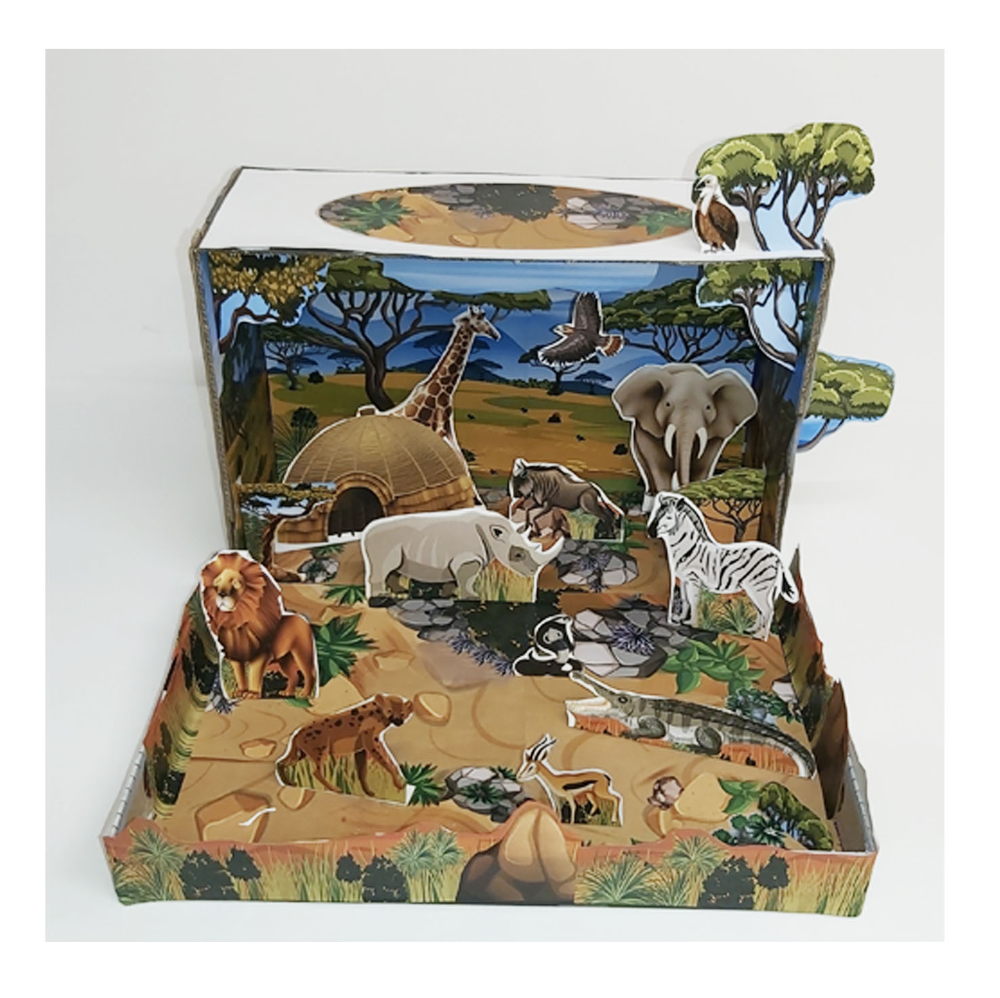

Create an easy and colourful 3D savanna habitat project for school using a printable paper model. This project is ideal for EVS activities, grassland habitat lessons, animal projects and creative homework.

A savanna habitat project is a fun way for children to learn about grasslands, African animals and the plants that live in warm open habitats.
This printable project includes savanna scenery, grassland plants and animals that can be cut out and arranged in layers. It can be used for EVS projects, habitat lessons, ecosystem studies and school assignments.
Print the project pages on A4 paper or slightly thicker paper.
Carefully cut out the animals, plants and savanna scenery pieces.
Glue the pieces into a box or on cardboard to build your own 3D savanna model.
This savanna model can be useful for students working on topics such as grassland habitats, African animals, animal adaptations, ecosystems, food chains and environmental studies.
Parents can print the project pages at home, while children can do the cutting, arranging and decorating themselves.
Get the Printable Savanna ProjectYou only need a printer, A4 paper, scissors, glue and a box or cardboard base. You can also add dry grass, coloured paper or other craft materials to give the savanna scene extra texture.